Tu ciclo,
a tu ritmo.
Un espacio para registrar, comprender y hacer preguntas sobre el bienestar menstrual.
Luisa Fernanda Velandia Salamanca
U00179371 ·
Tecnologías Móviles
Un historial que se pueda reconstruir.
Fechas, síntomas y notas dispersos dificultan reconocer cambios y recordar lo vivido.
Una beta Android para registrar ciclo, flujo, ánimo y síntomas.
Configuración en dos pasos, almacenamiento local y una estimación explicable.
Recordar fechas, observar patrones personales y preparar preguntas informadas.
Acceso y personalización
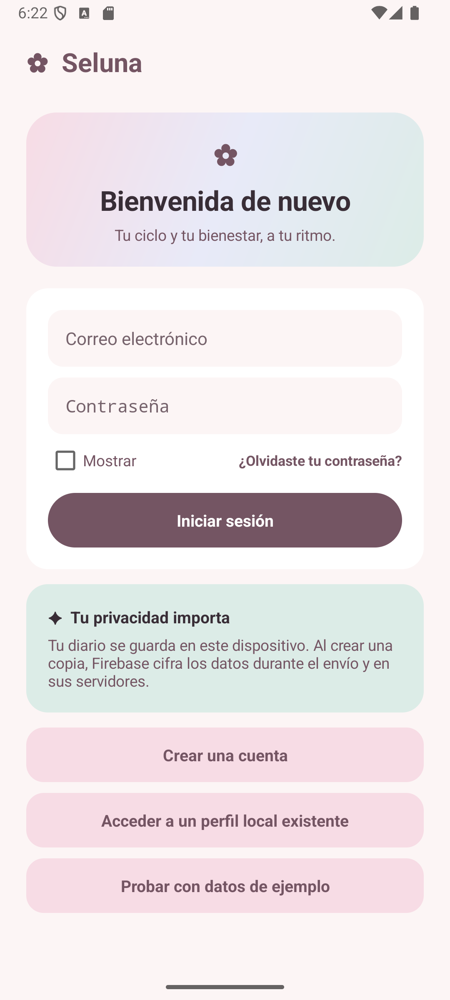
Correo y contraseña.
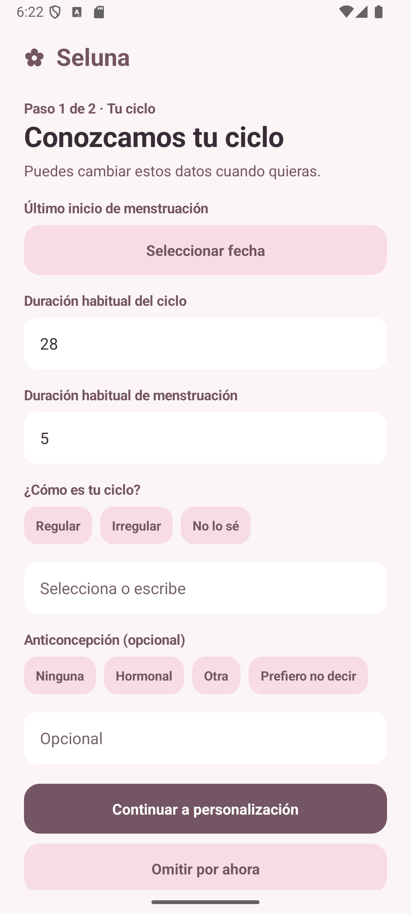
Fecha de inicio y duración.
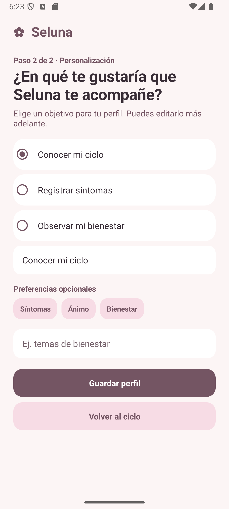
Objetivo y preferencias.
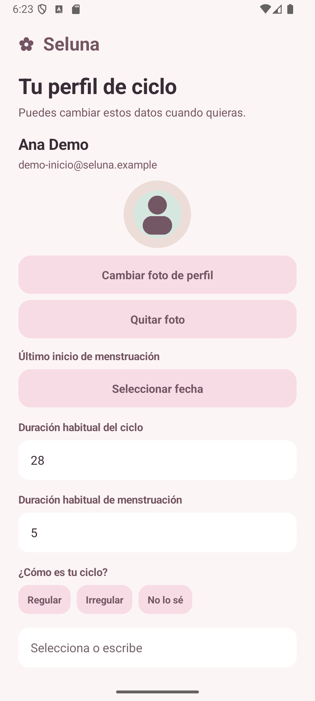
Foto guardada en el dispositivo.
Cuatro espacios, una historia.
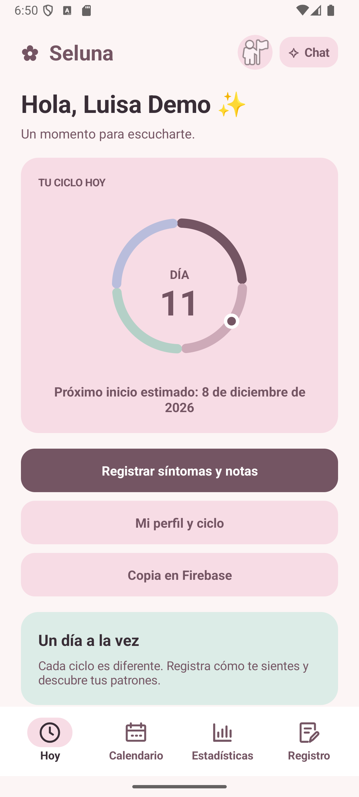
Día contado desde el último inicio registrado.
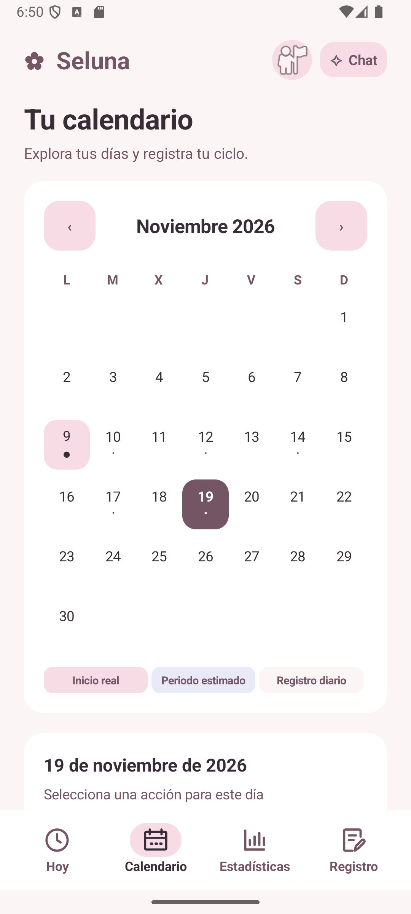
Inicios registrados y fechas estimadas.
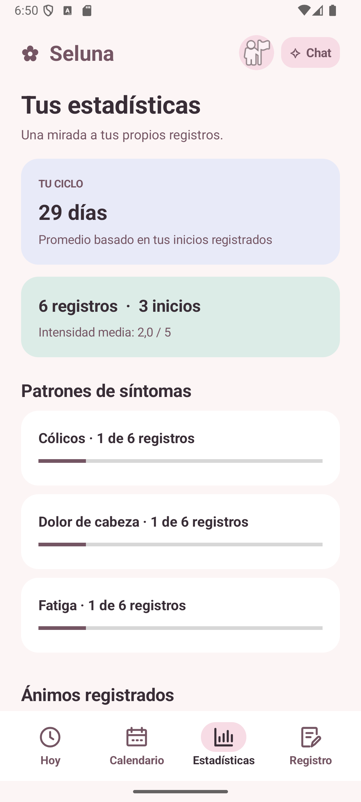
Tendencias del historial.
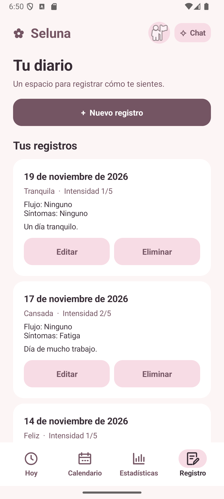
Diario, edición y eliminación.
El historial orienta la próxima fecha.
Se ordenan los inicios reales, se calculan los días entre ellos y se suma el promedio redondeado al último inicio.
Último inicio + 29 días = próximo inicio estimado.
Con un solo inicio se usa la duración configurada.
Tu diario, guardado en dos lugares.
SQLite guarda cada cambio en el teléfono. Puedes activar la copia automática en Firestore para recuperar tu historial.
El historial se guarda sin conexión. La foto queda en el teléfono. Diagrama de clases
Al activarlo, Seluna sube los cambios con conexión. En un teléfono nuevo, recupera la copia al entrar con la misma cuenta.
Las reglas reservan la copia a su titular. Si hay cambios incompatibles, Seluna pausa el respaldo.
Qué guarda Firebase
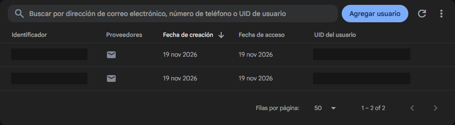
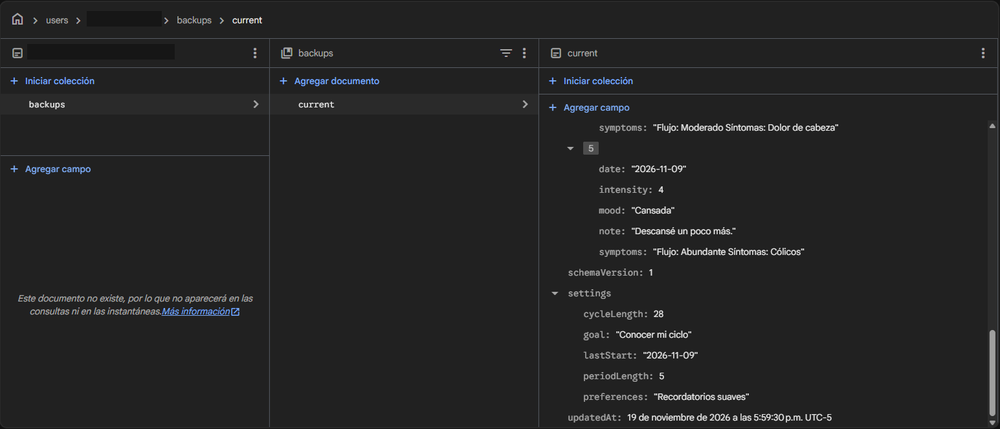
Evidencia de la prueba manual original.
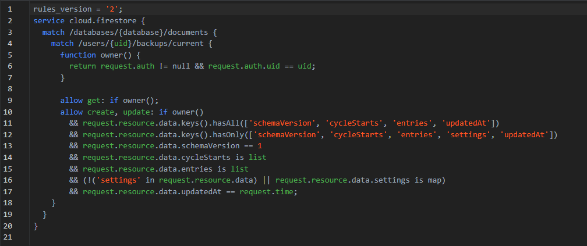
Guía local y chat con Qwen.
La guía responde preguntas frecuentes sin conexión. Para otras consultas se envía el texto de la conversación a B.AI.
Respuesta de prueba sin credenciales.
Requiere conexión y un servidor configurado con la clave.
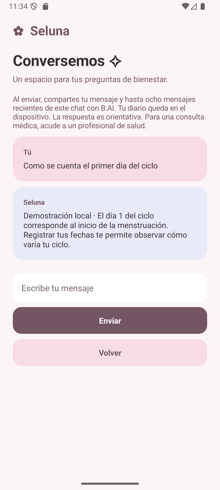
Qué comprobar en la beta.
Desarrollo incremental a partir del mockup y la rúbrica, con datos ficticios para probar cada recorrido.
- Formulario. Rechazar fechas y valores inválidos.
- Persistencia. Reabrir la app y encontrar el registro guardado.
- RecyclerView. Abrir una fecha o un registro con un toque.
- Informe. Exportar el resumen o añadir la tabla diaria. Ambos excluyen las notas privadas.
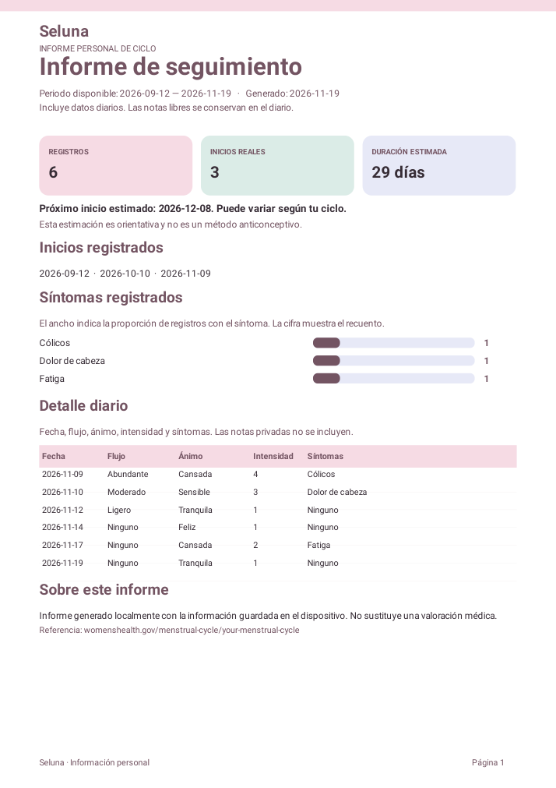
Consultar y compartir a tu ritmo.
Dos funciones propuestas para después de la entrega.
Consultar tu historial desde el navegador con tu propia cuenta.
Elegir los datos que quieres mostrar y retirar el permiso cuando quieras.
Demostración con datos de muestra.
Abrir Hoy, registrar un síntoma, revisar las estadísticas y exportar el informe. En el chat, probar la guía sin conexión.
Propuesta Seluna Plus. Seguimiento gratuito y una suscripción para ampliar las consultas y solicitar resúmenes.
Gracias
Luisa Fernanda Velandia Salamanca · U00179371